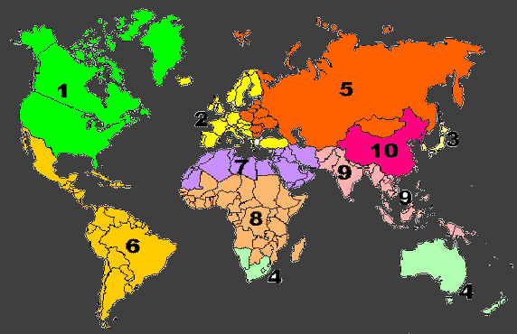

World Communities; Outside of U.S.A..
This page provides a framework for organizing world-wide communities outside of the United States, using a system of Ten World-Regions as a foundation. These Ten World-Regions are generally organized similarly to those proposed in 1973 by the "Club of Rome", as presented in their regional map; adapted with modifications to better harmonize with principles of proportional representation & local sovereignty.
Ten World-Regions; Index:
The following ten regions provide a starting framework for world-wide community organizing. Future development contemplates expanding these ten divisions to twelve, in order to harmonize more fully with universal principles of natural law, common law, & proportional representation.
01: North-America & Canada 02: Western-Europe 03: Pacific-Ocean Region 04: South-East Asia 05: Northern-Asia & Eastern-Europe 06: Central & South-America 07: Eastern-Mediterranean & North-Africa 08: India & South Asia 09: South & Central Africa 10: ChinaClub of Rome: Ten World-Regions Map.

These "Ten World-Regions" are Generally Organized Similarly as those which have been Proposed in 1973, by the "Club of Rome"; as presented in their "Map", linked above. While more advanced observers will instantly recognize this map as engineered by people mostly addicted to an evil-empire ideology of despotic world-government; the cold-hard fact is that a clear majority of the Ten Regions mapped-out here are nicely "Proportionally-Balanced"; with Roughly "Equal Population-Counts".
Here-under, with a few minor modifications which we are embracing, this map will temporarily serve as a nicely useful foundation for the larger "World Community-Organizing Efforts" which are contemplated, eventually, by the organizers of this effort.
One big remaining issue is that, later on, we will Need to Increase These "Ten Divisions" to "Twelve Divisions"; in order to harmonize more effectively with more universal principles of natural-law, common-law, & biblical torah-law. The massively-populated power-house of China will need to be split into two separate factions; which will bring this world-districts total to eleven; & after that, we can consider which other regional-borders need to be re-drawn in order to bring our full-total of world-divisions to a full universal-number of twelve.
But all of that is for a future-date in our growth-time-line here; & for now, these ten basic regions, from this Club-of-Rome Map, will serve as a very nice "starting-point" for our world-organizing efforts here.
We expect soon to produce a world-map similar to this one; but which is focused less intensely than the Romanists on establishing submissive Empires; & which is more focused on harmonizing with such natural-laws as "proportional-representation" & "local sovereignty", both of which are obligatory over all leaders of all "responsibly self-governing communities".